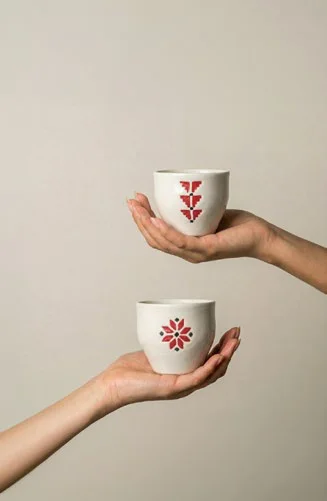

İletişim
Bize yazın
Bize yazın
yanıtlayalım
DAR’a ulaşmanın en hızlı yolu bir WhatsApp mesajı. Bir parça, beden ya da siparişiniz hakkında, veya kurumunuz için hediyeler hakkında bize sorabilirsiniz.
Hazır bir WhatsApp mesajı
Bir konu seçip sorunuzu yazın, WhatsApp’ı mesajınız yazılmış olarak açalım.
Mesajınız hazırDAR’a ulaşması için WhatsApp’tan gönderin. WhatsApp açılmadıysa buradan açın.
Yazmadan önce
Yanıt belki zaten burada
Sipariş takibiSiparişinizin nerede olduğunu görmek için sipariş numaranız ve cep telefonunuz yeterli.Siparişi takip et
Kargo ve teslimatTürkiye içine ve yurt dışına, ya da merkezden teslim alma.Kargo yanıtları
İade ve değişimBir parçayı ne zaman geri gönderebilirsiniz, paranız nasıl iade edilir.İade yanıtları
Parçalarınızın bakımıNakış nasıl yıkanır ve yıllarca nasıl korunur.Bakım rehberi

Bizi ziyaret edin
Bahçelievler, İstanbul
Kapımız açık
Gelin, parçalara kendi ellerinizle dokunun ve her desenin ardındaki hikâyeyi dinleyin. DAR merkezi İstanbul’un Bahçelievler ilçesinde.
Altın Sk. No:11/ABahçelievler, İstanbul
Gelmeden önce ziyaret saatini sizinle WhatsApp’tan netleştiririz.